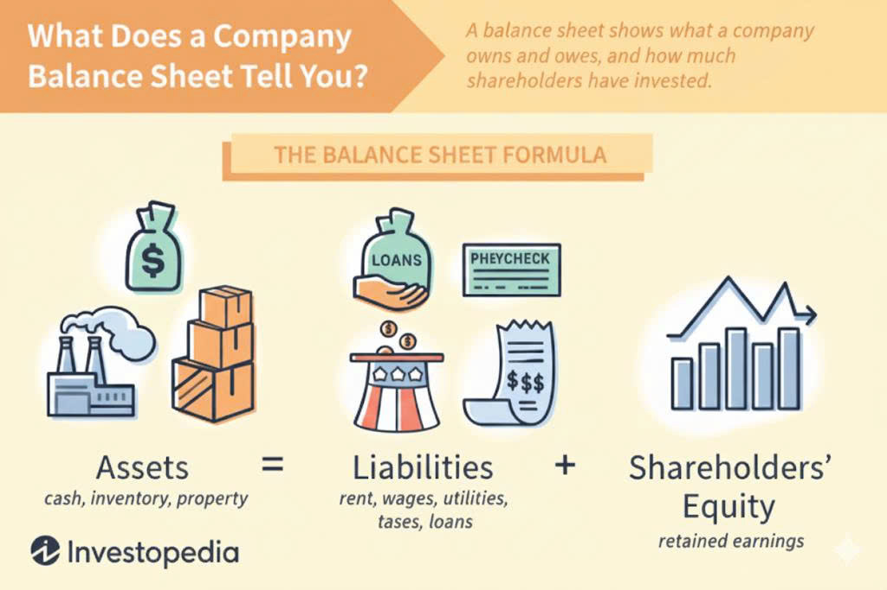

Decoding the Balance Sheet: Assets, Liabilities, and Owner's Equity Explained for Strategic Insight
For the strategic investor, the financial statements are not mere compliance documents; they are a critical window into a company’s operational health, risk profile, and long-term viability. Of these statements, the Balance Sheet stands out as the fundamental blueprint, providing a snapshot of what a company owns and what it owes at a specific moment in time.
Understanding the Balance Sheet is to grasp the core accounting equation that governs all finance.
The Accounting Equation: The Foundation of Financial Health
Every Balance Sheet is built upon a simple, yet profound, mathematical relationship:
Assets = Liabilities+Owner’s Equity
This equation dictates that everything a company owns (Assets) must have been financed either by money it borrowed (Liabilities) or by money invested by its owners (Equity). If the equation does not balance, the Balance Sheet is incorrect. For strategic analysis, this equation confirms that the company's resources are always perfectly matched by the sources of its funding.
1. Assets: What the Company Owns and Controls
Assets represent the resources controlled by the company that are expected to yield future economic benefits. Strategic investors categorize and analyze assets based on their liquidity—how quickly they can be converted into cash.
A. Current Assets (Liquidity and Operations):
These are assets expected to be converted into cash, sold, or consumed within one year (or one operating cycle). These items are crucial for assessing the company’s day-to-day operational capacity and financial flexibility.
Cash and Cash Equivalents: The most liquid assets, including actual cash, short-term treasury bills, and money market funds. This is a vital metric for solvency.
Accounts Receivable (A/R): Money owed to the company by customers for goods or services already delivered on credit. Analyzing the Days Sales Outstanding (DSO) ratio (A/R turnover) reveals the efficiency of the company’s collections process.
Inventory: Goods held for sale. The value of inventory is critical; excessive inventory can signal weak demand, while insufficient inventory can lead to lost sales.
B. Non-Current Assets (Long-Term Value):
Also known as Long-Term Assets, these are resources expected to provide economic benefits for more than one year. These are the engines of long-term production and growth.
Property, Plant, and Equipment (PP&E): Tangible assets such as land, buildings, machinery, and vehicles. These assets are recorded at their historical cost minus accumulated depreciation.
Intangible Assets: Non-physical assets critical to competitive advantage, such as patents, trademarks, copyrights, and goodwill. Goodwill arises when a company acquires another for a price exceeding the fair value of its identifiable net assets. Investors must closely monitor goodwill for potential impairment (a write-down if the acquired asset’s value declines).
Long-Term Investments: Investments in securities or subsidiaries that the company intends to hold for longer than one year.
2. Liabilities: What the Company Owes to Others
Liabilities represent the company's obligations to external parties (creditors) resulting from past transactions, which will require an outflow of economic benefits in the future. The debt structure reveals the company's reliance on external financing and its overall risk profile.
A. Current Liabilities (Short-Term Obligations):
These are obligations due within one year and indicate the company’s immediate financial burden.
Accounts Payable (A/P): Money owed by the company to its suppliers. Analyzing the Days Payable Outstanding (DPO) ratio reveals how efficiently the company is using its suppliers' credit.
Salaries and Wages Payable: Obligations to employees for work completed but not yet paid.
Deferred Revenue (or Unearned Revenue): Cash received from customers for goods or services that have not yet been delivered (e.g., a one-year software subscription paid upfront). This is technically a liability until the service is rendered.
B. Non-Current Liabilities (Long-Term Obligations):
These are obligations due beyond one year, representing the long-term debt structure of the company.
Bonds Payable: Debt securities issued by the company to raise capital from investors.
Long-Term Notes Payable: Loans from banks or other financial institutions with maturity dates exceeding one year.
Deferred Tax Liabilities: Future tax obligations arising from differences between accounting rules and tax laws.
Pension Obligations: The present value of the company's commitment to pay retirement benefits to employees.
3. Owner's Equity: The Owners' Stake in the Company:
Owner's Equity (or Shareholders' Equity for publicly traded companies) represents the owners' residual claim on the assets after all liabilities have been paid off. It is the core measure of the owners' investment and the company’s accumulated profitability.
Key Components of Equity:
Common Stock (or Share Capital): The par value of shares issued to investors. This represents the initial capital contributed by the owners.
Additional Paid-in Capital (APIC): The amount investors paid for shares above the par value.
Retained Earnings: The cumulative amount of net income (profits) the company has kept and reinvested in the business, rather than paying out as dividends. This is the most critical metric in equity for strategic investors, as it directly reflects the company's historical profitability and internal growth financing.
Treasury Stock: Shares that the company has repurchased from the open market. This reduces total equity.
Strategic Insights: Analyzing the Balance Sheet Ratios
For an investor, the true power of the Balance Sheet lies in the ratios derived from its three components:
| Ratio | Calculation | Strategic Interpretation |
|---|---|---|
| Current Ratio | Current Assets/Current Liabilities | Measures a company's ability to cover its short-term debt. A ratio above 1.0 is generally considered healthy; a ratio significantly higher might suggest inefficient cash management. |
| Debt-to-Equity Ratio | Total Liabilities/Total Equity | Assesses the proportion of debt used to finance assets relative to equity. A high ratio indicates higher financial risk but potentially higher returns if investments are successful. |
| Quick Ratio (Acid-Test) | (Cash+Marketable Securities+A/R)/Current Liabilities | A stricter measure of liquidity than the Current Ratio, as it excludes inventory (the least liquid current asset), providing a more realistic view of immediate solvency. |